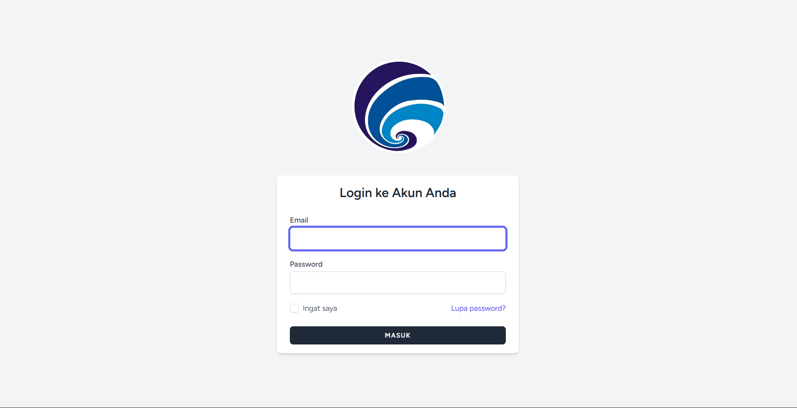

Ringkasan Project
Proyek ini dikembangkan untuk membantu tim HR dan karyawan mengelola lembur secara online. Pengguna bisa mengajukan lembur, melihat status, serta memantau histori dengan lebih transparan.
Web Application • HR System
Aplikasi web untuk mempermudah proses pengajuan, persetujuan, dan pencatatan lembur karyawan dengan alur yang lebih rapi dan terukur.

Proyek ini dikembangkan untuk membantu tim HR dan karyawan mengelola lembur secara online. Pengguna bisa mengajukan lembur, melihat status, serta memantau histori dengan lebih transparan.
Fitur utama
Karyawan dapat mengajukan lembur dengan data yang jelas dan mudah dipantau.
Proses persetujuan dibagi rapi untuk memudahkan supervisi dan kontrol.
Data yang tersimpan memudahkan pencatatan dan pemeriksaan lembur di masa mendatang.
Gallery
Teknologi
Jelajahi proyek lain yang juga sudah saya bangun beserta gambaran detailnya.
Lihat Semua Project